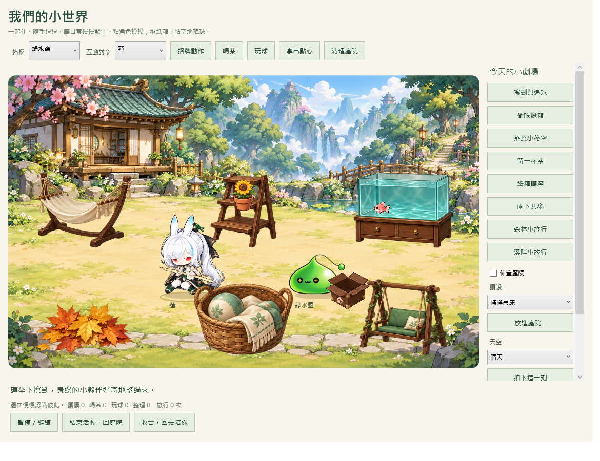

一起住，也各有個性
五位角色可選不同搭檔，咖凌保留三套衣服。喝茶、玩球、摸摸與整理會留下各自的習慣。
蓮擦著劍，綠水靈追球鑽進葉堆。
你伸手摸摸牠，今天又多了一段小故事。
這裡展示實際 WPF 程式畫面與錄製動畫。互動遊玩請完整解壓縮下載包，執行 Start.exe，右鍵 →「小世界 · 一起生活」。

五位角色可選不同搭檔，咖凌保留三套衣服。喝茶、玩球、摸摸與整理會留下各自的習慣。
釣來的魚進水族箱、種過的花放上花台。六個擺設區能交換位置，角色會自己使用家具。
森林與溪畔各有三個相遇事件。完成旅行帶回紀念物，還能拍照留下兩位夥伴的模樣。